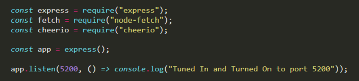
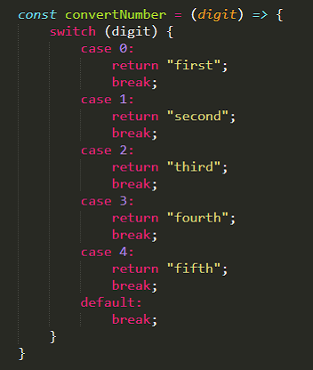
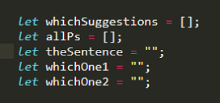
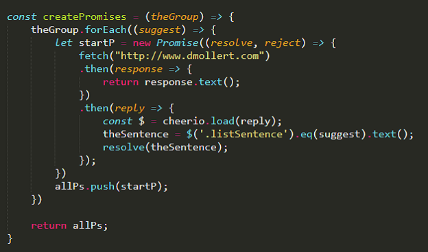
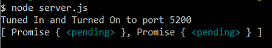
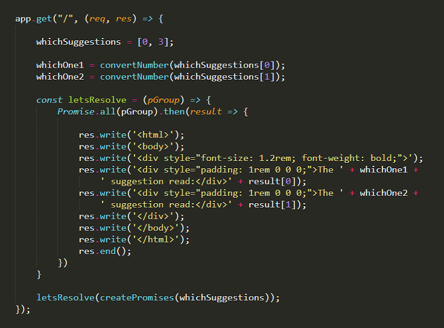
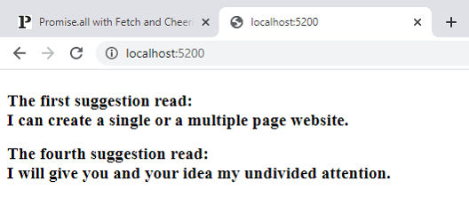

Here's a combination . . .
Promise.all, Fetch and Cheerio
- that web scraping npm module -
all running on a Node.js server.
I was searching the Internet for help with a project which used these two methods along with the npm module. The issue I was having had to do with dealing with multiple Promises. The closest I came to my situation was a youtube video made by Alex Jacobs where he showed a concept which I adapted to fit my project. The main idea I show below is to pack each promise/fetch into an array before they are resolved. At some time later you can run the Promise.all method and resolve them. This concept solved the issues I was having with Node routing as you will see.
I will be using my website to scrape some of the suggestions I list.
Let's start with a basic Node server. I added the three modules: express, node-fetch and cheerio for my needs.

Before we get into it, I want to show this switch function and the variables I am using.


With this createPromises function you pass in an array of items (see below). For each number which represents a suggestion (suggest) it creates a Promise and fetches the HTML to scrape. The response is then returned in a text format. Next the reply receives that response and sends it to Cheerio along with the sentence number (suggest) to scrape. That is then resolved. Each Promise is pushed into the allPs array which is returned to the function caller when done.

This image shows the allPs array that is returned from the createPromises function: an array of two Promises that are pending.

Now starting at the route, I substituted whichSuggestions for the req.body which comes in from the GET route. This array contains the numbers representing the sentence I want scraped. The variables whichOne1 and whichOne2 are created with the switch function. At the bottom of the image, the array whichSuggestions is sent to the function createPromises (shown above). The array of pending promises that is returned is then sent to the letsResolve function which handles all the promises at once with Promise.all. The result returns an array consisting of each sentence. Last step is some Node Express syntax to send both sentences to the website.

And here is what you end up with.

This concept allows you to move the createPromises function to another file. Using Node module.exports and require you can service multiple letsResolve functions if need be. One drawback I found is you give up the .catch error handling in fetch and promises. When I tried to simulate an error I got an array of ' ' elements.
An added note: in the function createPromises, I've tried to "resolve" the promise with and array or an object. What happened was the result (from the letsResolve function) returned multiple copies of the last promise. So it looks as if only a string can be passed in the resolve method. I solved my problem of passing multiple scraped items from the page by concatenating the items together in a string separated by commas. Once resulted, I separated the string.